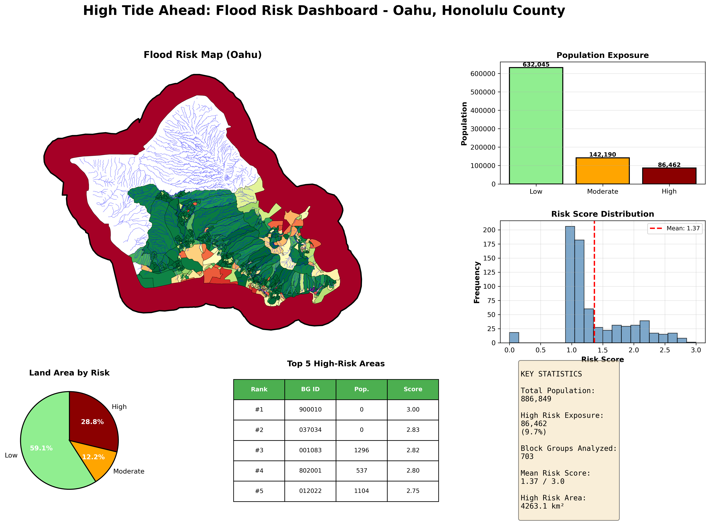

Results
Flood Risk Mapping and Population Exposure Findings
Risk Model Components
The flood risk model combines elevation and proximity to inland waterways, weighted 70% and 30% respectively.

Panel (A) shows the digital elevation model, with the Ko’olau and Wai’anae mountain ranges clearly visible. Panel (B) classifies elevation into risk categories. Panel (C) shows proximity risk based on distance to streams and rivers (coastline excluded). Panel (D) presents the final composite risk classification.
Comprehensive Risk Map

The top 5 highest-risk block groups are marked with stars. High-risk areas concentrate along the southern coastal plain (Waikiki, Ala Moana, Pearl Harbor) and in windward valley floors.
Population Exposure

The figures and statistics below are for Oahu only. Honolulu County technically includes small Northwestern Hawaiian Islands, which were filtered out during visualization. The raw CSV files in the repository contain data for all of Honolulu County (773 block groups, 979,682 residents), while the figures shown here are subsetted to Oahu (703 block groups, 886,849 residents).
By Population (Oahu Only)
| Risk Category | Population | Percent |
|---|---|---|
| High | 86,462 | 9.7% |
| Moderate | 142,190 | 16.0% |
| Low | 632,045 | 71.3% |
| Total | 886,849 | 100% |
By Land Area
| Risk Category | Percent of Land |
|---|---|
| High | 28.8% |
| Moderate | 12.2% |
| Low | 59.1% |
The disparity between land area and population percentages reflects that high-risk coastal areas tend to be less densely populated than inland urban zones.
Dashboard Summary

Key Statistics (Oahu Only)
- Total Population Analyzed: 886,849
- High Risk Exposure: 86,462 (9.7%)
- Block Groups Analyzed: 703
- Mean Risk Score: 1.37 / 3.0
Top High-Risk Areas
The following census block groups have the highest composite risk scores:
| Rank | Block Group | Population | Risk Score |
|---|---|---|---|
| 1 | 900010 | 0 | 3.00 |
| 2 | 037034 | 0 | 2.83 |
| 3 | 001083 | 1,296 | 2.82 |
| 4 | 802001 | 537 | 2.80 |
| 5 | 012022 | 1,104 | 2.75 |
Note: Block groups with zero population are typically parks, industrial areas, or military installations.
Legend Reference

Interactive Exploration
The interactive map allows detailed exploration of flood risk across Oahu. Features include:
- Toggle layers: Switch between risk score and population exposure views
- Click for details: View block group statistics in popup windows
- High-risk markers: Top 10 highest-risk block groups marked with warning icons
Key Takeaways
- 86,462 residents (9.7% of Oahu’s population) live in high flood risk areas
- High-risk areas concentrate along the southern coastal plain and windward valley floors
- The elevation component drives most of the risk classification on this island geography
- Stream proximity adds localized high-risk corridors inland from the coast
- Mean risk score of 1.37 indicates most block groups are relatively low-risk
Limitations
Several factors affect interpretation of these results:
- Uniform population assumption: Population is allocated proportionally by area, not actual residential density
- Static analysis: Does not account for future sea level rise or development changes
- No storm modeling: Risk categories are based on physical exposure, not probabilistic flood modeling
- Resolution tradeoffs: 10m resolution balances detail with computational feasibility
See Methodology for additional technical details.